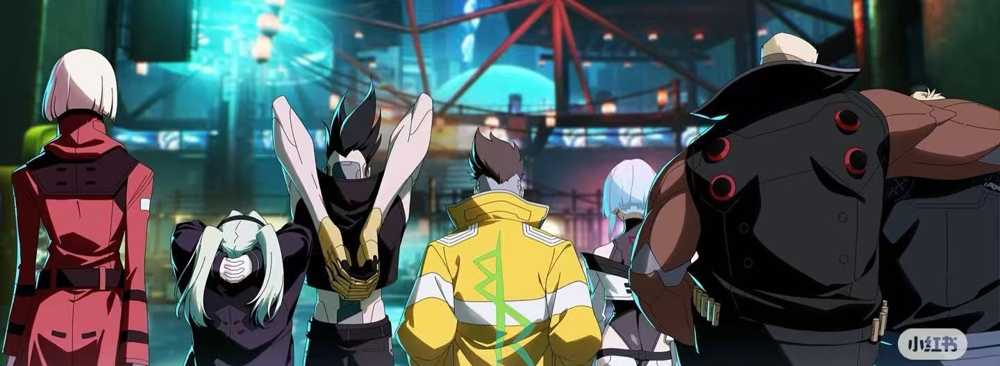
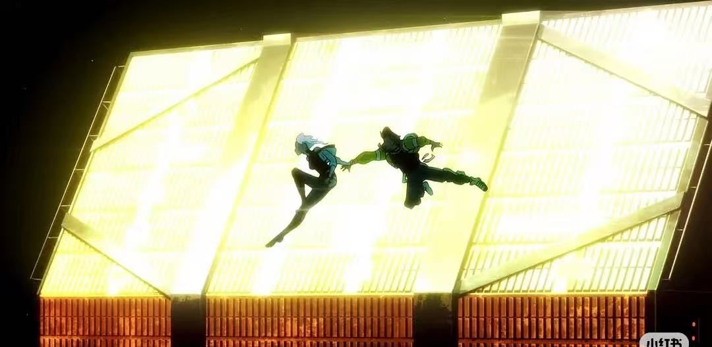
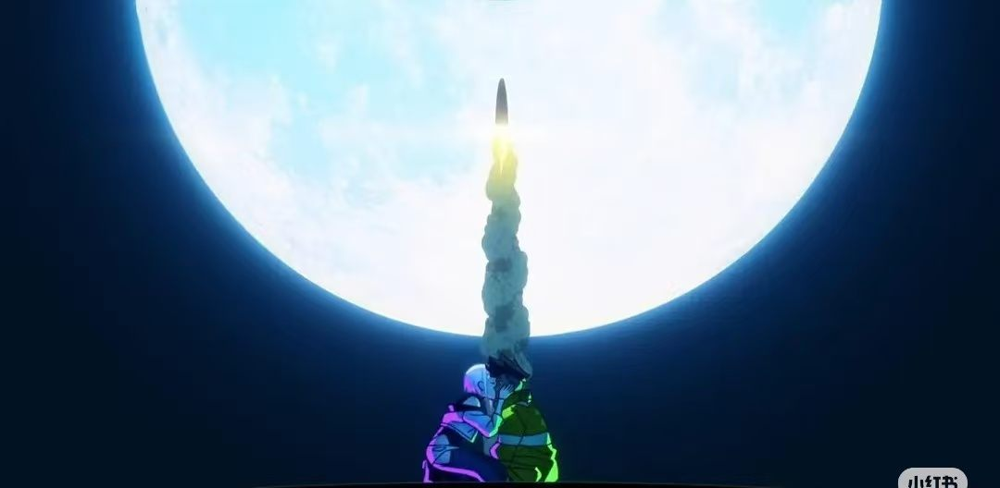

十集动画，把一款游戏从谷底捞了回来
2022 年 9 月，CD PROJEKT RED 和日本动画工作室 TRIGGER 一起交出了一部十集的独立动画。它没有主角光环，只有一个穷小子把自己改到报废的全过程——结果成了 Netflix 当年最大的动画意外。
01第一季：一个人能承受多少失去
大卫·马丁内斯是个在荒坂学院念书的穷学生。母亲在帮派交火中被流弹打死，他捡到了她留下的军用义体——一副装在尸体上的「斯安威斯坦」，能让人在几秒内加速到肉眼看不见。
他把这副义体装进了自己身上。之后的故事是一个标准的夜之城模板：接活、赚钱、换更好的义体、接更危险的活。区别在于，他身边有人。露西、丽贝卡、缅因、琦微——一群同样没有退路的人，凑成了一个勉强能叫做家的东西。
转折来自缅因。这位队长在一次任务中义体过量，精神崩解，死在同伴面前。大卫继承了缅因的义体，也继承了他的位置和同样的结局。到最后，他为了救露西装上了荒坂的实验性外骨骼「赛博骨架」，用自己的身体去换她一条命。
结局没有反转。大卫死在亚当·重锤手里，丽贝卡被当场碾死，法拉科带着露西逃出去。露西最后一个人去了月球——那是大卫答应过她、却从没兑现的事。
主要角色
- 大卫·马丁内斯主角。把别人的梦想当成自己的，最后连身体也一起用完。
- 露西网络黑客。唯一的愿望是离开地球，去月球。
- 丽贝卡火力手。整部动画里最没心机、也最惨的一个。
- 缅因队长。赛博精神病的第一个样本。
- 琦微黑客。为了自保出卖队友，是这座城市的标准答案。
- 法拉第中间人。把所有人当筹码的体面人。
- 亚当·重锤荒坂的处刑人。几乎所有故事里他都负责收尾。



02它对这个游戏做了什么
一个反常识的现象：一部结局极其悲惨、主角全灭的动画，成了这款游戏最有效的营销。它证明了这个 IP 真正吸引人的地方不是“爽”，而是那种明知道会输还要往前走的劲。
03第二季：换掉主角，换掉问题
2026 年 10 月 20 日，《边缘行者 2》在 Netflix 上线，十集一次性放出。它没有续写大卫和露西，而是完全另起一队人马上场——主创的说法很直接：大卫的故事已经闭合了，硬接只会让观众失望。
新一季的主角是四个人：曾经的传奇边缘行者「微克·金斯利」，一场赛博精神病之后被拆掉全部义体，活在过去的影子里；蛇族网络黑客 D，为追查灭族凶手一路查到不该碰的企业机密；十二岁的业余电影作者罗曼，在一座用超梦取代了电影的城市里，执意记录真实；以及在公司高楼长大、被漩涡帮磨硬的塔莉亚。
导演从今石洋之换成五十岚海（第一季第六集《Girl on Fire》的分镜与动画监督），编剧仍是大冢雅彦，系列主创巴托什·斯德波继续把控世界观。音乐从山冈晃换成今堀恒雄，片头曲用了 The Cure 的《10:15 Saturday Night》。
叙事结构也跟着换了：第一季是一条向下的单线，第二季是四条交织的群像。主题从“一个人燃烧自己成为传奇”，转向“企业如何系统性地毁掉一个社区”。
两季主创对照
- 导演今石洋之 → 五十岚海
- 编剧大冢雅彦（两季）
- 系列主创巴托什·斯德波（两季）
- 音乐山冈晃 → 今堀恒雄
- 角色设计菅野一期（第二季）
- 制作TRIGGER × CD PROJEKT RED（两季）
第二季还埋了一个彩蛋：小岛秀夫客串出演自己在游戏里演过的超梦导演「大岛秀吉」。
04两季摆在一起看
| 维度 | 第一季（2022） | 第二季（2026） |
|---|---|---|
| 主角 | 大卫·马丁内斯，单人视角 | 微克、D、罗曼、塔莉亚，群像四线 |
| 核心问题 | 一个人能承受多少失去，才不算白活 | 一群已经被失去塑造过的人，还能为了什么继续打 |
| 反派形态 | 具体的恶：中间人、企业杀手 | 系统性的恶：企业、帮派与社区共谋 |
| 视觉 | TRIGGER 式高张力作画，霓虹高饱和 | 回到 90 年代 OVA 质地，更脏、更旧、更粗粝 |
| 结局 | 主角团几乎全灭，露西独自登月 | 四线汇合，代价依旧，但没有重复上一季的悲壮 |
| 评价 | IGN 9 分档；豆瓣 9.0；Crunchyroll 年度动画 | IGN 9 分；GamesRadar 4/5；豆瓣开分 5.9，口碑两极化 |